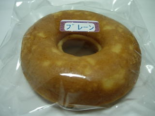
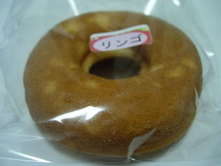
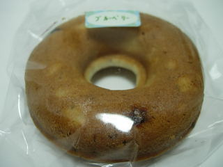

もんこちゃんのお店のアイスクリーム
2009/9/26
道の駅頓原にある「もんこちゃんのお店」でアイスクリームを食べました。
頓原味噌が好きなので、味噌アイスを注文したら、もう今日は売り切れてました。人気ですね。
ミルクアイスを買ったんですが、甘さ控えめで、牛乳味がよくわかる味であっさりしてました。
アイスクリームですが柔らかく、ソフトクリームみたいでした。
私はコーンで食べたんですが、コーンの味が強く、アイスの味の邪魔になるように感じたので、次からはカップで買おうと思いました。
焼きドーナッツも販売していたので買って帰りました。



バターの味が効いてて、ドーナッツってよりもケーキな感じでした。